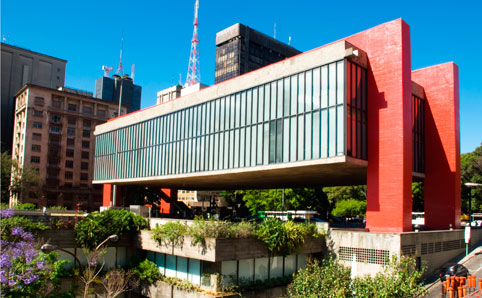

Museu de Arte de São Paulo Assis Chateaubriand (mais conhecido pelo acrônimo MASP) é uma das mais importantes instituições culturais brasileiras. Localiza-se, desde 7 de novembro de 1968, na Avenida Paulista, cidade de São Paulo, em um edifício projetado pela arquiteta ítalo-brasileira Lina Bo Bardi para ser sua sede. Famoso pelo vão de mais de 70 metros que se estende sob quatro enormes pilares, concebido pelo engenheiro José Carlos de Figueiredo Ferraz, o edifício é considerado um importante exemplar da arquitetura brutalista brasileira e um dos mais populares ícones da capital paulista, sendo tombado pelas três esferas do poder executivo. O engenheiro responsável foi Isac Grobman.
